리눅스마스터-1급 (2016-03-12 기출문제)
1과목: 리눅스 실무의 이해
1. 다음 중 리눅스의 기술적인 특징에 대한 설명으로 틀린 것은?
- 리눅스의 파일 구조는 /(root)를 기준으로 그 하위 디렉터리에 usr, var, bin 등이 존재하는 계층적 파일 구조이다.
- 하드디스크, 키보드, 프린트 등 시스템에 설치된 여러 가지 하드웨어적 자원을 모두 파일화하여 사용한다.
- 하나의 모니터를 장착한 시스템에서 리눅스는 기본적으로 6개의 가상 콘솔을 제공한다.
- 파이프는 어떤 프로세스의 입/출력을 표준 입출력이 아닌 다른 입출력으로 변경할 때 사용한다.
(정답률: 64%)

2. 다음 ( 괄호 ) 안에 들어갈 내용으로 알맞은 것은?
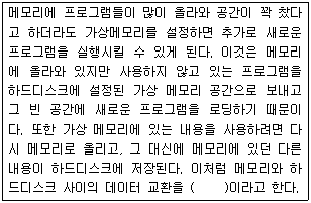
- 스와핑(Swapping)
- 라이브러리(Library)
- 루틴(Routine)
- 링크(Link)
(정답률: 79%)
3. 다음 중 자유 소프트웨어(Free Software Foundation)에 대한 설명으로 틀린 것은?
- 목적에 상관없이 프로그램을 실행시킬 수 있는 자유
- 프로그램이 어떻게 동작하는 지 학습하고, 필요에 따라서 프로그램을 개작할 수 있는 자유
- 무료로만 프로그램을 재배포할 수 있는 자유
- 프로그램을 개선시킬 수 있는 자유와 개선된 이점을 공동체 전체가 누릴 수 있도록 발표할 수 있는 자유
(정답률: 69%)
4. 다음에서 설명하는 공개 소프트웨어 라이선스로 알맞은 것은?
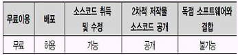
- LGPL
- GPL
- BSD
- MPL
(정답률: 65%)
5. 다음에서 설명하는 리눅스 배포판으로 알맞은 것은?
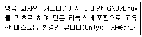
- CentOS
- Slackware
- Ubuntu
- SUSE
(정답률: 73%)
6. 다음 중 [Ctrl]+[z] 입력 시에 전송되는 시그널로 알맞은 것은?
- SIGTSTP
- SIGSTOP
- SIGQUIT
- SIGCOUNT
(정답률: 56%)
7. 다음 중 프로세스(Process) 대한 설명으로 틀린 것은?
- 실행(executing, running)중인 프로그램이다.
- PCB(Process Control Block)를 지닌 프로그램이다.
- 프로그램 카운터(Program Counter)를 지닌 프로그램이다.
- 수동적 개체(entity)로, 비순차적으로 수행하는 프로그램이다.
(정답률: 69%)
8. 다음 중 텍스트 환경에서 커서를 이용하여 자동으로 실행되는 서비스를 설정할 수 있는 유틸리티로 알맞은 것은?
- service
- ntsysv
- chkconfig
- init
(정답률: 59%)
9. 다음 ( 괄호 ) 안에 들어갈 내용으로 알맞은 것은?
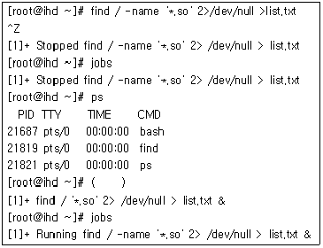
- fg
- fork
- bg
- exec
(정답률: 63%)
10. 다음 ( 괄호 ) 안에 들어갈 내용으로 알맞은 것은?
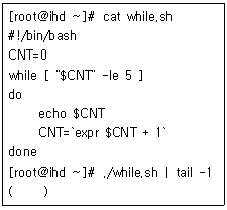
- 0
- 1
- 4
- 5
(정답률: 54%)
11. 다음 중 X 서버에 접속이 허가된 192.168.10.100의 접근 목록을 제거하려고 할 때 알맞은 것은?
- xhost 192.168.10.100
- xhost + 192.168.10.100
- xhost - 192.168.10.100
- xhost del 192.168.10.100
(정답률: 62%)
12. 다음 중 LibreOffice 패키지에서 스프레드시트 프로그램으로 알맞은 것은?
- Impress
- Calc
- Draw
- Writer
(정답률: 60%)
13. grub.conf 환경 설정 파일에 대한 설명으로 틀린 것은?
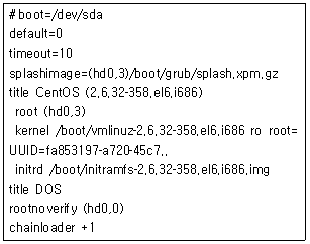
- /boot 디렉터리는 첫 번째 하드디스크의 네 번째 파티션에 설치되어 있다.
- DOS 타이틀로 부팅된다.
- 현재 설정은 10초간 선택이 없으면 default에 설정된 값으로 부팅된다
- xpm 형태의 그림이미지를 압축한 xpm.gz 파일을 사용한다.
(정답률: 54%)
14. 다음 중 로그인 메시지 관련 파일에 대한 설명으로 틀린 것은?
- /etc/issue : 사용자가 로그인할 때 ‘login: ’이라는 메시지를 보여주기 전에 출력되는 내용을 적는 파일이다.
- /etc/issue.net : 텔넷(telnet)을 통한 네트워크 접속 할 때 출력되는 메시지를 기록한다.
- /etc/motd : 성공적으로 로그인되었을 때 접속된 사용자에게 보여주는 메시지를 기록하는 파일이다.
- /etc/nologin.txt : 사용자의 셸이 /sbin/nologin로 지정되면 /etc/nologin.txt에서 기록된 메시지와 함께 성공적으로 로그인이 된다.
(정답률: 58%)
15. 다음 ( 괄호 ) 안에 들어갈 내용으로 알맞은 것은?
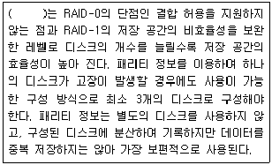
- RAID-5
- RAID-6
- RAID-7
- RAID-10
(정답률: 67%)
16. 다음에서 설명하는 OSI 모델 계층으로 알맞은 것은?
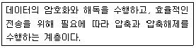
- 네트워크 계층
- 세션 계층
- 표현 계층
- 응용 계층
(정답률: 62%)
17. 다음에서 설명하는 프로토콜로 알맞은 것은?
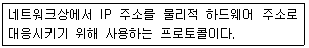
- IP
- ARP
- TCP
- ICMP
(정답률: 67%)
18. 다음 설명에 해당하는 서브넷마스크값으로 알맞은 것은?
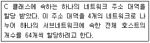
- 255.255.255.4
- 255.255.255.64
- 255.255.255.128
- 255.255.255.192
(정답률: 64%)
19. 다음 중 리눅스 시스템에 설정된 DNS 서버 주소를 확인할 수 있는 파일로 알맞은 것은?
- /etc/hosts
- /etc/host.conf
- /etc/networks
- /etc/resolv.conf
(정답률: 64%)
20. 다음 중 리눅스 시스템에 설정된 게이트웨이 주소값을 확인하는 명령으로 틀린 것은?
- ip
- route
- dig
- netstat
(정답률: 52%)
2과목: 리눅스 시스템 관리
21. 다음 중 생성된 계정을 삭제하거나 사용 제한을 하고자 할 때에 대한 내용으로 틀린 것은 ?
- /etc/passwd, /etc/group 파일에서 직접 제거할 수 있다.
- 계정 서비스를 보류 시키려면 /etc/passwd 파일의 패스워드 필드를 “*”로 변경한다.
- 계정 사용을 일시적으로 불가능하게 하려면 /etc/passwd 파일의 쉘을 삭제한다.
- 옵션없이 userdel 명령어로 계정을 삭제하면 계정디렉터리도 제거 된다.
(정답률: 60%)
22. rpm 명령어를 이용하여 ftp 서버 (192.168.0.1)의 /pub 디렉터리에 있는 http-2.1.22.rpm 패키지를 설치하고자 한다. 다음 중 관련 명령으로 알맞은 것은?
- rpm -f ftp://192.168.0.1/pub/http-2.1.22.rpm
- rpm -t ftp://192.168.0.1/pub/http-2.1.22.rpm
- rpm -i ftp://192.168.0.1/pub/http-2.1.22.rpm
- rpm –ftp ftp://192.168.0.1/pub/http-2.1.22.rpm
(정답률: 62%)
23. 다음 중 기존의 리눅스 시스템에 새로운 HDD를 추가 하는 순서로 알맞게 나열한 것은?
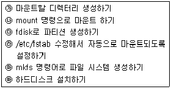
- ㉰-㉲-㉮-㉯-㉳-㉱
- ㉳-㉰-㉲-㉮-㉯-㉱
- ㉳-㉮-㉯-㉰-㉲-㉱
- ㉮-㉲-㉳-㉰-㉱-㉯
(정답률: 62%)
24. 리눅스 시스템 운영 중에 rpm 패키지들의 정보를 저장하고 있는 데이터베이스가 손상되었다. 다음 중 rpm 데이터베이스를 새롭게 생성하는 명령으로 알맞은 것은 ?
- rpm --rebuild
- rpm --rebuilddb
- rpm --replace
- rpm —replacedb
(정답률: 49%)
25. 다음 중 보안 강화를 위한 root 계정 관리 방법에 대한 설명으로 틀린 것은?
- root 이외의 UID가 0인 사용자를 추가하여 보안을 강화한다.
- PAM을 이용하여 root 계정으로 직접 로그인 하는 서비스를 제어한다.
- 환경변수인 TMOUT를 설정하여 무의미하게 장시간 로그인 하는 것을 막는다.
- 일반 사용자에게 특정 명령어 권한만 할당해 줄 경우에는 su보다는 sudo 명령을 이용하도록 설정한다.
(정답률: 69%)
26. 다음 중 posein의 계정 만기일을 “2020-12-31”로 설정 할 때 알맞은 것은?
- usermod -e 2020-12-31 posein
- usermod -E 2020-12-31 posein
- usermod -i 2020-12-31 posein
- usermod -I 2020-12-31 posein
(정답률: 61%)
27. 다음 설명에 해당하는 명령으로 알맞은 것은?
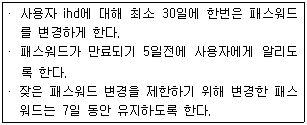
- chage -m 30 -d 5 -E 7 ihd
- chage -M 30 -W 5 -m 7 ihd
- chage -m 30 -M 5 -W 7 ihd
- chage -M 30 -d 5 -m 7 ihd
(정답률: 54%)
28. 다음 각 파일의 특수 목적 접근 모드에 대한 설명으로 틀린 것은?
- -rwsr-xr-x: s는 SUID로서 프로그램을 실행하는 동안에는 프로세스가 파일의 소유자와 같은 권한으로 실행된다.
- -rwxr-xr-s: s는 OUID로서 프로그램을 실행하는 동안에는 프로세스가 others와 같은 권한으로 실행된다.
- drwxrwxrwt: t는 sticky bit로서 퍼미션에 관계없이 소유자만이 파일을 지울수 있다
- -rwxr-sr-x: s는 SGID로서 프로그램을 실행하는 동안에는 프로세스가 파일의 그룹과 같은 권한으로 실행된다.
(정답률: 53%)
29. 디스크의 파티션 설정에 사용하는 fdisk 명령에 대한 설명으로 틀린 것은?
- /dev/sdc 장치를 파티션 하기 위해서는 fdisk /dev/sdc 명령을 수행한다.
- fdisk 명령어 중 n 은 새로운 파티션을 생성하고자 할 때 사용한다.
- fdisk 명령어 중 p는 파티션 설정 도움말을 보여 준다.
- fdisk 명령어 중 w는 변경한 파티션 정보를 저장하고 fdisk 모드에서 빠져 나온다.
(정답률: 56%)
30. 다음중스왑(swap) 파일을생성하는절차로알맞은것은?
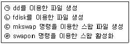
- (ㄴ)-(ㄷ)-(ㄹ)
- (ㄴ)-(ㄹ)-(ㄷ)
- (ㄱ)-(ㄹ)-(ㄷ)
- (ㄱ)-(ㄷ)-(ㄹ)
(정답률: 56%)
31. 다음의 조건으로 crontab에 등록할 때 알맞은 것은?
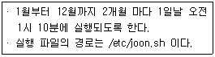
- 10 1 1 1-12/2 * /etc/joon.sh
- 1 10 1 1-12/2 * /etc/joon.sh
- 1 10 1-12/2 1 * /etc/joon.sh
- 10 1 1-12/2 1 * /etc/joon.sh
(정답률: 56%)
32. 다음 중 renice 명령에 대한 설명으로 틀린 것은?
- 실행중인 프로세스의 우선순위를 변경할 때 사용하는 명령이다.
- PID 이외에 사용자명, 그룹ID로 사용할 수 있다.
- 프로세스명을 사용한다.
- 실행중인 프로세스에 NI 값이 즉시 부여되고, 프로세스가 추가로 발생하지 않는다.
(정답률: 44%)
33. 다음 중 소스 파일로 프로그램을 설치하는 단계로 알맞은 것은?
- configure - make - make install
- make - make install - configure
- configure - make install - make
- make - configure - make install
(정답률: 58%)
34. 다음 중 모듈 사이의 의존성을 검사하여 modules.dep와 map 파일을 생성하는 명령어로 알맞은 것은?
- mkfs
- modprobe
- depmod
- mkinitrd
(정답률: 45%)
35. 다음 중 부팅 시 네트워크 모듈을 자동으로 적재하기 위해서 다음과 같은 내용을 저장하고 있는 파일로 알맞은 것은?
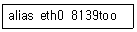
- /etc/sysconfig/network
- /etc/sysconfig/hwconf
- /etc/modprobe.conf
- /etc/inittab
(정답률: 45%)
36. 다음에 설명된 리눅스 커널 모듈(Module)관련 명령어가 순서대로 알맞게 나열된 것은?
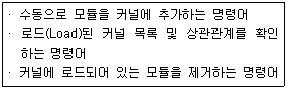
- addmod, lsmod, delmod
- insmod, listmod, rmmod
- addmod, lstmod, delmod
- insmod, lsmod, rmmod
(정답률: 55%)
37. 다음 중 lpr 명령어를 사용하여 지정한 문서 파일을 2장 인쇄할 때 사용하는 옵션으로 알맞은 것은?
- -#
- -P
- -T
- -l
(정답률: 52%)
38. 다음 ( 괄호 ) 안에 들어갈 내용으로 알맞은 것은?
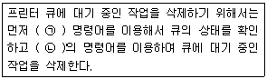
- (ㄱ) lpq (ㄴ) lpr
- (ㄱ) lpq (ㄴ) lp
- (ㄱ) lpstat (ㄴ) cancel
- (ㄱ) lpstat (ㄴ) lpr
(정답률: 40%)
39. 다음 중 su 명령에 대한 설명 중 틀린 것은?
- 일반 사용자가 su를 사용하여 일반 사용자의 로그인 암호를 입력하면 root의 권한으로 명령을 실행할 수 있다.
- 일반 사용자가 su를 사용하여 root의 로그인 암호를 입력하면 root 권한을 가질 수 있다.
- root가 su를 사용하면 아무런 입력 없이 일반 사용자의 권한으로 명령을 실행할 수 있다.
- su 뒤에 로그인 이름이 없으면, su root 명령과 동일하게 적용된다.
(정답률: 54%)
40. 다음 중 /etc/shadow 파일에 있는 사용자 정보로 틀린 것은?
- 로그인 이름
- 그룹 이름
- 로그인 계정의 유효 기간
- 패스워드를 변경해야만 하는 날까지의 남은 날수
(정답률: 52%)
41. 다음 중 사용자의 그룹에 대한 설명을 틀린 것은?
- 사용자를 생성하면 자동으로 특정 그룹에 속한다.
- 사용자를 추가로 다른 그룹에 포함 시키려면 groupmod 명령을 사용한다.
- /etc/group 파일에서 해당 그룹에 추가로 포함된 사용자를 확인할 수 있다.
- 그룹 추가는 groupadd, 그룹 삭제는 groupdel 명령을 사용한다.
(정답률: 47%)
42. 다음에서 설명하는 명령어로 알맞은 것은?
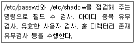
- pwconv
- pwunconv
- pwcheck
- pwck
(정답률: 50%)
43. 다음 설명에 해당하는 명령으로 알맞은 것은?
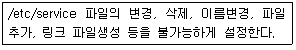
- chattr +a /etc/service
- chattr +A /etc/service
- chattr +i /etc/service
- chattr +I /etc/service
(정답률: 39%)
44. mount 명령어를 사용하여 다음과 같은 조건으로 파일 시스템을 마운트하려고 한다. 이를 위한 명령으로 알맞은 것은?
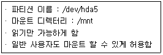
- mount -t ext4 -o ro,suid /mnt /dev/hda5
- mount -t ext4 -o ro,user /dev/hda5 /mnt
- mount -t ext4 -o ro,user /mnt /dev/hda5
- mount -r -t ext5 -o suid /dev/hda5 /mnt
(정답률: 54%)
45. /etc/fstab 필드 중에서 fsck와 가장 연관이 있는 필드는 몇 번째 인가?
- 3번째
- 4번째
- 5번째
- 6번째
(정답률: 43%)
46. 다음 ps 명령의 상태 (STAT) 코드 중에 작업은 종료 되었으나 부모프로세스에 의해 회수 되지 않아 메모리를 차지하고 있는 상태를 나타내는 값으로 알맞은 것은?
- R
- S
- T
- Z
(정답률: 56%)
47. mke2fs 명령을 이용하여 /dev/sdb1 파티션에 ext3 파일 시스템을 생성하기 위한 명령어로 알맞은 것은?
- mke2fs -i /dev/sdb1
- mke2fs -j /dev/sdb1
- mke2fs -k /dev/sdb1
- mke2fs -n /dev/sdb1
(정답률: 44%)
48. 다음 결과의 명령어로 알맞은 것은?
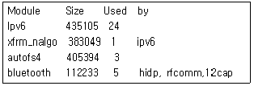
- lspci
- lsmod
- lsof
- lsusb
(정답률: 58%)
49. 커널 컴파일 과정 중 아래에서 설명하는 명령이 순서대로 바르게 나열된 것은?
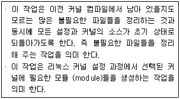
- make mrproper, make mkmodules
- make proper, make modules
- make mrproper, make modules
- make proper, make mkmodules
(정답률: 59%)
50. 다음 중 인터넷 기반으로 연결된 프린터에 접근 할 때 사용하는 포트 번호로 알맞은 것은?
- 631
- 143
- 443
- 611
(정답률: 47%)
51. 다음 설정을 적용하는 파일에 대한 설명으로 틀린 것은?
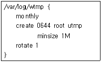
- 파일 생성 시에 허가권 값은 0644이다.
- 파일 생성 시에 소유자는 root이고 소유 그룹은 utmp로 설정한다.
- 로테이트로 생성되는 백로그 파일은 1개만 생성한다.
- /var/log/wtmp는 한 달마다 로테이트를 실행하고, 파일 크기가 1MB가 되더라도 로테이트를 실행하지 않는다.
(정답률: 58%)
52. 다음 last 옵션 중 로그인 및 로그아웃 시간을 출력하려 할 때 알맞은 것은?
- -R
- -F
- -i
- -a
(정답률: 35%)
53. 다음에서 설명하는 명령어로 알맞은 것은?
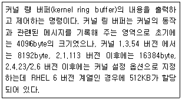
- dmesg
- lastb
- lastlog
- last
(정답률: 54%)
54. 관련 로그를 로그인한 모든 사용자의 터미널로 전송 하려고 한다. 다음 ( 괄호 ) 안에 들어갈 내용으로 알맞은 것은?
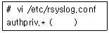
- *
- user
- @host
- file
(정답률: 46%)
55. 다음 중 ssh 특징에 대한 설명으로 틀린 것은?
- 클라이언트와 서버간의 데이터 전송 시에 일반 텍스트 형태로 패킷을 전달한다.
- rlogin처럼 패스워드 입력 없이 로그인이 가능하다.
- rsh처럼 원격 셸을 지원한다.
- 원격 복사(scp)를 지원한다.
(정답률: 51%)
56. 다음 중 커널에서 최대로 사용 가능한 파일 수를 지정할 때 설정하는 파일로 알맞은 것은?
- /proc/sys/net/ipv4/ip_forward
- /proc/sys/net/ipv4/tcp_keepalive_time
- /proc/sys/net/ipv4/tcp_fin_timeout
- /proc/sys/fs/file-max
(정답률: 60%)
57. ssh 명령을 이용해 IP주소가 192.168.10.100 인 ssh 서버에 ihd라는 계정으로 접속하여 data라는 디렉터리를 생성하려고한다. 다음중해당서버에접속하는방법으로 알맞은 것은?
- ssh -p ihd 192.168.10.100 mkdir data
- ssh -l ihd 192.168.10.100 mkdir data
- ssh -x ihd 192.168.10.100 mkdir data
- ssh -v ihd 192.168.10.100 mkdir data
(정답률: 42%)
58. 다음 ( 괄호 ) 안에 들어갈 내용으로 알맞은 것은?
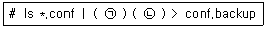
- (ㄱ) dump (ㄴ) -0f
- (ㄱ) dump (ㄴ) -0u
- (ㄱ) cpio (ㄴ) -ocv
- (ㄱ) cpio (ㄴ) -icv
(정답률: 43%)
59. 다음에서 설명하는 명령으로 알맞은 것은?
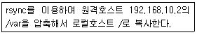
- rsync ‐avz / 192.168.10.2:/var
- rsync ‐av / 192.168.10.2:/var
- rsync ‐av 192.168.10.2:/var /
- rsync ‐avz 192.168.10.2:/var /
(정답률: 42%)
60. 다음 ( 괄호 ) 안에 들어갈 내용으로 알맞은 것은?
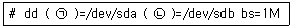
- (ㄱ) if (ㄴ) of
- (ㄱ) of (ㄴ) if
- (ㄱ) iflag (ㄴ) oflag
- (ㄱ) oflag (ㄴ) ifag
(정답률: 54%)
3과목: 네트워크 및 서비스의 활용
61. 다음 중 아파치 웹 서버 2.x 버전에 대한 설명으로 알맞은 것은?
- 소스가 공개되어 있지 않다.
- PHP는 동적 모듈로만 지원한다.
- GPL 라이선스 기반으로 배포된다.
- 멀티스레딩(Multi-threading)만 지원한다.
(정답률: 33%)
62. HTTP 관련 상태코드 중 클라이언트의 요청에 대해 성공적으로 접속했음을 나타내는 코드로 알맞은 것은?
- 100
- 200
- 400
- 404
(정답률: 49%)
63. 운영 중인 아파치 웹 서버 상에서 /etc/passwd 파일의 정보가 특정 파일을 통해 노출되는 문제점이 발견 하였다. 다음 중 이 문제점과 관련된 <Directory> 태그 옵션으로 알맞은 것은?
- SymLink
- SymLinks
- FollowSymLink
- FollowSymLinks
(정답률: 38%)
64. 다음 설명과 관련 있는 아파치 웹 서버의 환경 설정 항목으로 알맞은 것은?
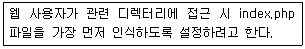
- Indexes
- FileInfo
- DirectoryIndex
- Includes
(정답률: 49%)
65. 다음은 PHP 설치 후 httpd.conf에 php 파일이 해석하도록 지정하는 과정이다. ( 괄호 ) 안에 들어갈 내용으로 알맞은 것은?
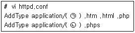
- (ㄱ) html (ㄴ) source
- (ㄱ) html-php (ㄴ) html-php-source
- (ㄱ) httpd-php (ㄴ) httpd-php-source
- (ㄱ) x-httpd-php (ㄴ) x-httpd-php-source
(정답률: 35%)
66. 다음 LDAP 속성 중 국가 이름을 나타내는 키워드로 알맞은 것은?
- c
- cn
- g
- gn
(정답률: 44%)
67. 다음 중 네트워크 기반으로 사용자 인증 서비스를 제공하는 조합으로 알맞은 것은?
- NIS, NFS
- NFS, LDAP
- NFS, SAMBA
- NIS, LDAP
(정답률: 39%)
68. 다음 중 NIS 클라이언트 데몬으로 알맞은 것은?
- ypbind
- ypserv
- rpcbind
- ypc
(정답률: 47%)
69. 다음 중 NIS와 가장 관련이 없는 서비스로 알맞은 것은?
- telnet
- ssh
- dns
- samba
(정답률: 43%)
70. 다음 ( 괄호 ) 안에 들어갈 파일명으로 알맞은 것은?
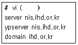
- /etc/hosts
- /etc/sysconfig/network
- /etc/yp.conf
- /etc/ypserv.conf
(정답률: 37%)
71. 192.168.12.22번 IP 주소를 사용하는 윈도 시스템의 공유 폴더가 lin이다. 다음 중 해당 폴더로 접근하는 명령으로 알맞은 것은?
- smbclient //192.168.12.22//lin
- smbclient ////192.168.12.22//lin
- smbclient \\192.168.12.22\lin
- smbclient \\\\192.168.12.22\\lin
(정답률: 37%)
72. 다음은 등록된 삼바 사용자의 정보를 확인하는 과정이다. ( 괄호 ) 안에 들어갈 명령으로 알맞은 것은?
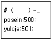
- pdbedit
- smbpasswd
- nmblookup
- smbstatus
(정답률: 24%)
73. 다음 설명과 같은 경우 NFS 서버에 공유된 디렉터리를 마운트하는 명령으로 알맞은 것은?
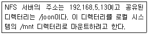
- mount –t nfs 192.168.5.13/joon /mnt
- mount –t nfs 192.168.5.13:/joon /mnt
- mount –t nfs 192.168.5.13\joon /mnt
- mount –t nfs 192.168.5.13:\joon /mnt
(정답률: 47%)
74. 다음 설명에서 설명하는 NFS 서버 설정 옵션으로 알맞은 것은?
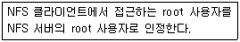
- secure
- all_squash
- root_squash
- no_root_squash
(정답률: 44%)
75. 다음 중 레드햇 계열 리눅스에서 운영되는 /etc/vsftpd/ftpusers 파일에 대한 설명으로 알맞은 것은?
- ftp 서버에 접근할 수 없는 계정 목록 파일이다.
- ftp 서버에 접근할 수 있는 계정 목록 파일이다.
- ftp 서버에 접근할 수 있는 서버 목록 파일이다.
- ftp 서버에 파일을 업로드할 수 있는 계정 목록 파일이다.
(정답률: 40%)
76. 다음 중 리눅스에서 사용하는 POP3 및 IMAP 서버 프로그램으로 알맞은 것은?
- qmail
- postfix
- dovecot
- evolution
(정답률: 34%)
77. 다음에서 설명하는 메일 관련 프로그램의 분류로 알맞은 것은?
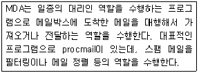
- MTA(Mail Transfer Agent)
- MDA(Mail Delivery Agent)
- MUA(Mail User Agent)
- MSA(Mail Submission Agent)
(정답률: 49%)
78. 다음 중 보낸 메일의 전송 상태를 확인하는 명령으로 알맞은 것은?
- m4
- mailq
- qmail
(정답률: 48%)
79. 다음 중 메일 서버에서 사용하는 도메인 등록과 가장 관련이 있는 파일로 알맞은 것은?
- /etc/aliases
- /etc/mail/access
- /etc/mail/virtusertable
- /etc/mail/local-host-names
(정답률: 37%)
80. 다음 중 메일 암호화 관련 있는 도구로 가장 알맞은 것은?
- PGP
- Nessus
- Nmap
- Tripwire
(정답률: 41%)
81. 다음 중 DNS 서버에 대한 설명으로 틀린 것은?
- Caching Name Server는 도메인을 소유하지 않아도 구성할 수 있다.
- Primary Name Server는 자체적으로 존 파일을 백업하는 역할을 수행한다.
- Secondary Name Server는 반드시 구성해야 할 필요는 없다.
- DNS 관련 질의가 많은 경우에 Caching Name Server를 구성하면 인터넷 사용 속도를 높일 수 있다.
(정답률: 40%)
82. 다음 중 named.conf의 문법적 오류를 검사할 때 사용 하는 명령으로 알맞은 것은?
- checkconf
- namedconf
- named-checkconf
- check-namedconf
(정답률: 41%)
83. 다음은 존 파일 설정의 일부이다. ( 괄호 ) 안에 들어갈 내용으로 알맞은 것은?
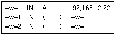
- A
- MX
- HINFO
- CNAME
(정답률: 52%)
84. DNS로 운영 중인 현재 시스템 이외에는 네임 서버에 대한 질의를 허가하지 않으려고 한다. 다음 ( 괄호 ) 안에 들어갈 내용으로 알맞은 것은?
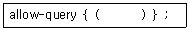
- only;
- forward only;
- forwards;
- localhost;
(정답률: 44%)
85. 다음은 역 존(Reverse zone) 파일을 설정하는 내용이다. IP 주소가 192.168.5.13일 경우 ( 괄호 ) 안에 들어갈 내용으로 가장 알맞은 것은?
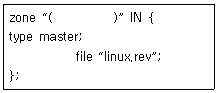
- 192.168.5.in-addr.arpa
- 192.168.5.13.in-addr.arpa
- 5.168.192.in-addr.arpa
- 13.5.168.192.in-addr.arpa
(정답률: 44%)
86. 다음에서 설명하는 가상화 기능으로 알맞은 것은?
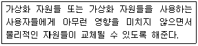
- 공유
- 절연(Insulation)
- 단일화
- 에뮬레이션
(정답률: 41%)
87. 다음 중 CPU 전가상화 뿐만 아니라 CPU 반가상화도 지원하는 가상화 기술로 알맞은 것은?
- KVM
- Xen
- VMware
- VirtualBox
(정답률: 46%)
88. 다음에서 설명하는 가상화 효과로 알맞은 것은?
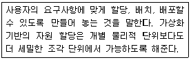
- 향상된 보안
- 높아진 가용성
- 증가된 확장성
- 향상된 프로비저닝
(정답률: 48%)
89. 리눅스 서버에 장착된 CPU의 가상화 지원 여부를 확인하려고 한다. 다음 중 관련 파일로 알맞은 것은?
- /proc/cmdline
- /proc/cpuinfo
- /proc/stat
- /proc/cpustat
(정답률: 55%)
90. 다음은 VM1이라는 가상 머신을 종료시키는 과정이다. ( 괄호 ) 안에 들어갈 명령으로 알맞은 것은?
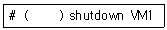
- virt-manager
- virt-top
- xm
- virsh
(정답률: 44%)
91. 다음 중 xinetd에서 제공하는 기능으로 틀린 것은?
- IP 주소 당 접속 수 제한
- DOS 공격에 대비한 설정 제공
- 서비스에 대한 사용자 아이디 제한
- 서비스에 대한 접속 시간 제한
(정답률: 34%)
92. 다음 중 리눅스에서 사용하는 프록시 서버 프로그램으로 알맞은 것은?
- squid
- squirrel
- anaconda
- python
(정답률: 50%)
93. 다음은 dhcpd.conf 파일의 일부로 게이트웨이 주소를 할당해주는 부분이다. ( 괄호 ) 안에 들어갈 내용으로 알맞은 것은?
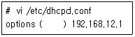
- routers
- router
- route
- gateway
(정답률: 26%)
94. 다음 중 VNC 서버에서 사용하는 포트 번호로 가장 알맞은 것은?
- 3128
- 5901
- 6446
- 8080
(정답률: 40%)
95. 다음 중 NTP 서버를 이용해서 시간을 동기화할 때 사용하는 명령으로 알맞은 것은?
- ntp
- ntpq
- ntpdate
- ntptime
(정답률: 43%)
96. 다음 프로그램의 소스와 관련 있는 DOS 공격으로 알맞은 것은?
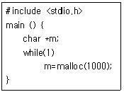
- 디스크 자원 고갈 공격
- 메모리 자원 고갈 공격
- 프로세스 자원 고갈 공격
- 데이터 파괴 공격
(정답률: 53%)
97. 다음에서 설명하는 DOS 공격으로 알맞은 것은?
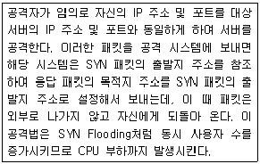
- Teardrop Attack
- Smurf Attack
- Land Attack
- UDP Flooding
(정답률: 37%)
98. 다음에서 설명하는 방화벽의 종류로 알맞은 것은?
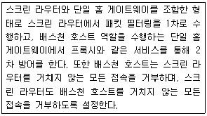
- 단일 홈 게이트웨이
- 스크린 라우터
- 스크린 서브넷 게이트웨이
- 스크린 호스트 게이트웨이
(정답률: 45%)
99. 같은 IP 주소에서 60초 동안에 15번 이상 SSH 접속을 시도하면 DROP 시키는 정책을 SSH 사슬에 추가하려 한다. ( 괄호 ) 안에 들어갈 내용으로 가장 알맞은 것은?
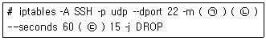
- (ㄱ) recent (ㄴ) --update (ㄷ) --hitcount
- (ㄱ) recent (ㄴ) --hitcount (ㄷ) --update
- (ㄱ) state (ㄴ) --hitcount (ㄷ) NEW
- (ㄱ) state (ㄴ) NEW (ㄷ) --update
(정답률: 41%)
100. 다음 ( 괄호 ) 안에 들어갈 내용으로 알맞은 것은?
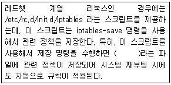
- /etc/rc.d/rc.local
- /etc/sysconfig/iptables
- /var/log/secure
- /usr/sbin/iptables
(정답률: 37%)
파이프는 두 개 이상의 프로세스를 연결하여 한 프로세스의 출력이 다른 프로세스의 입력으로 전달되도록 하는 기능입니다. 이를 통해 여러 개의 명령어를 조합하여 복잡한 작업을 수행할 수 있습니다. 예를 들어, ls 명령어로 현재 디렉터리의 파일 목록을 출력한 후, grep 명령어로 특정 문자열을 검색하는 작업을 파이프로 연결하여 수행할 수 있습니다.